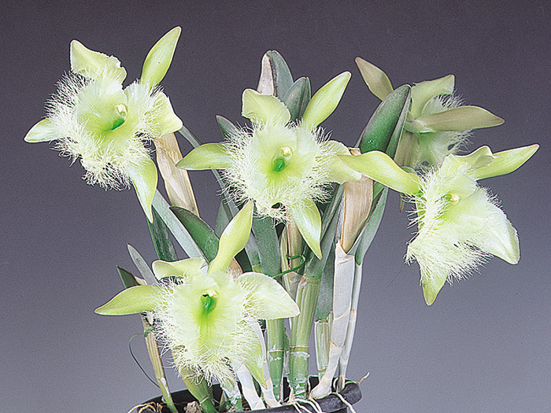

Más símbolos patrios

Bandera
Ave Nacional
Guacamaya Roja

La organización territorial de Honduras divide el país, política y administrativamente, en 18 departamentos, y estos en 298 municipios. La forma de gobierno es republicana, democrática y representativa. Se ejerce por tres poderes: Legislativo, Ejecutivo y Judicial, complementarios e independientes y sin relaciones de subordinación. La población de Honduras supera los 9 millones de habitantes,10 1112 dedicada en su mayor parte a las actividades agropecuarias, además del comercio, manufacturas, y servicios públicos entre otras actividades. El departamento de Honduras con mayor densidad de población es Cortés con 400. hab./km². El país es multiétnico, consta de cuatro grandes familias étnicas: los blancos o mestizos que son la mayoría, los pueblos indígenas (lencas, misquitos, tolupanes, chortis, pech, tawahkas), garífunas y criollos de habla inglesa. El territorio de Honduras es muy accidentado, lo forman altas filas de montañas, elevadas planicies, valles profundos en los que se encuentran llanos extensos y fértiles cruzados por ríos más o menos caudalosos y algunos navegables,13 todo lo cual contribuye a su rica biodiversidad.14 Se estima que en Honduras existen unas 8000 especies de plantas, alrededor de 250 de reptiles y anfibios, más de 700 especies de aves y 110 especies de mamíferos, distribuidos en las diferentes regiones.
Honduras es un país ubicado en el centro-norte de América Central; su nombre oficial es República de Honduras y su capital es Distrito Central, formado por las ciudades de Tegucigalpa y Comayagüela. Honduras es un estado unitario y se autodefine como libre, soberano e independiente, unitario e indivisible. Limita al norte y este con el mar Caribe, al sureste con Nicaragua, al sur con el golfo de Fonseca y El Salvador, y al oeste con Guatemala. La extensión territorial de Honduras, comprendiendo todas sus islas, es de 112 492 km².1
El territorio que corresponde a la actual Honduras fue hogar de la civilización maya durante el primer milenio de nuestra era, como lo testimonian las ruinas de Copán. Fue invadido después por los Aztecas y a continuación por los Mosquitos. En 1502, la región fue descubierta por Cristóbal Colón. La población indígena fue entonces diezmada por la conquista española y por las enfermedades que trajeron los colonos. Sin embargo, muy pronto los pueblos se mezclaron y los mestizos llegaron a ser el grupo étnico dominante de Honduras..